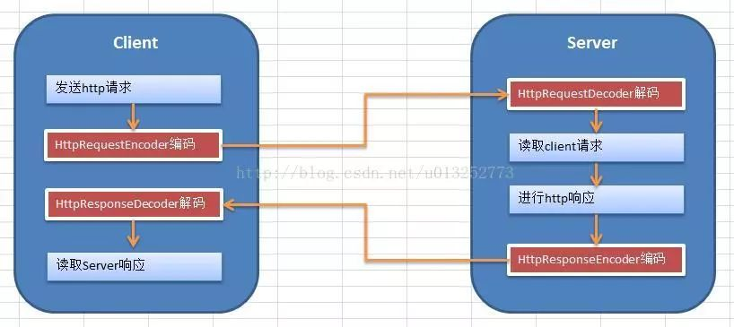
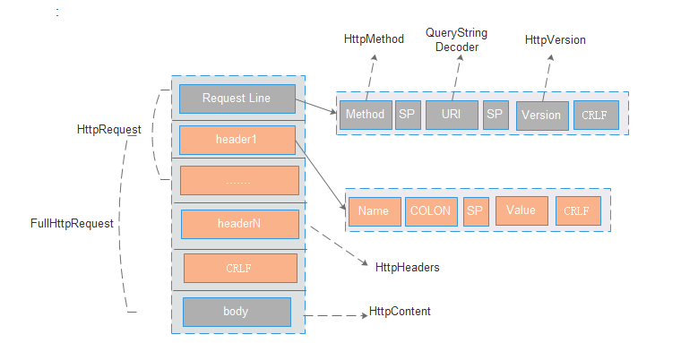
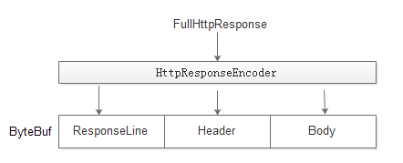
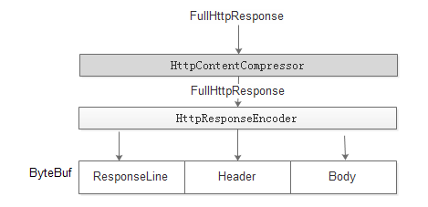
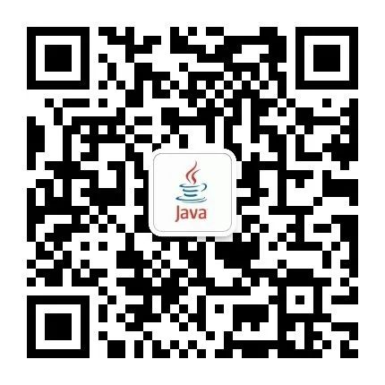

高性能Netty实战-http协议解析
一丶 Netty基础入门
Netty是一个高性能、异步事件驱动的NIO框架，它提供了对TCP、UDP和文件传输的支持，作为一个异步NIO框架，Netty的所有IO操作都是异步非阻塞的，通过Future-Listener机制，用户可以方便的主动获取或者通过通知机制获得IO操作结果。
作为当前最流行的NIO框架，Netty在互联网领域、大数据分布式计算领域、游戏行业、通信行业等获得了广泛的应用，一些业界著名的开源组件也基于Netty的NIO框架构建。
二丶 Netty高性能之道
RPC调用的性能模型分析
RPC 的全称是 Remote Procedure Call 是一种进程间通信方式。 它允许程序调用另一个地址空间（通常是共享网络的另一台机器上）的过程或函数，而不用程序员显式编码这个远程调用的细节。即程序员无论是调用本地的还是远程的函数，本质上编写的调用代码基本相同。
HTTP理解客户端和服务器端的交互步骤
客户端和服务器端的交互步骤如下：
1、Client向Server发送http请求。
2、Server端对http请求进行解析。
3、Server端向client发送http响应。
4、Client对http响应进行解析。
在这些步骤中会涉及到http请求的编码、解码，http响应的编码、解码。幸运的是，Netty已经为我们提供了这些工具，整个实例的逻辑图如下所示： 
其中红色框中的4个类是Netty提供的，它们其实也是一种Handler，其中Encoder继承自ChannelOutboundHandler，Decoder继承自ChannelInboundHandler，它们的作用是：
1、HttpRequestEncoder：对httpRequest进行编码。
2、HttpRequestDecoder：把流数据解析为httpRequest。
3、HttpResponsetEncoder：对httpResponset进行编码。
4、HttpResponseEncoder：把流数据解析为httpResponse。
该实例涉及到的类有5个：HttpServer HttpServerInboundHandler HttpClient HttpClientInboundHandler ByteBufToBytes
netty实现
http协议实现的抽象
很多http server(比如tomcat,resin)的实现都是基于servlet，但是netty对http实现并没有基于servlet。
下面将对请求request的抽象进行描述。 response对象的抽象比较类似，将不做描述

HttpMethod：主要是对method的封装，包含method序列化的操作
HttpVersion: 对version的封装，netty包含1.0和1.1的版本
QueryStringDecoder: 主要是对url进行封装，解析path和url上面的参数。(Tips：在tomcat中如果提交的post请求是application/x-www-form-urlencoded，则getParameter获取的是包含url后面和body里面所有的参数，而在netty中，获取的仅仅是url上面的参数)
HttpHeaders：包含对header的内容进行封装及操作
HttpContent：是对body进行封装，本质上就是一个ByteBuf。如果ByteBuf的长度是固定的，则请求的body过大，可能包含多个HttpContent，其中最后一个为LastHttpContent(空的HttpContent),用来说明body的结束。
HttpRequest：主要包含对Request Line和Header的组合
FullHttpRequest： 主要包含对HttpRequest和httpContent的组合
request的流程处理
实现：
只需要在netty的pipeLine中配置HttpRequestDecoder和HttpObjectAggregator。
原理：

1：如果把解析这块理解是一个黑盒的话，则输入是ByteBuf，输出是FullHttpRequest。通过该对象便可获取到所有与http协议有关的信息。
2：HttpRequestDecoder先通过RequestLine和Header解析成HttpRequest对象，传入到HttpObjectAggregator。然后再通过body解析出httpContent对象，传入到HttpObjectAggregator。当HttpObjectAggregator发现是LastHttpContent，则代表http协议解析完成，封装FullHttpRequest。
3：对于body内容的读取涉及到Content-Length和trunked两种方式。两种方式只是在解析协议时处理的不一致，最终输出是一致的。
面临的问题：
1：假设申请的ByteBuf为1k，如果读取request Line，把ByteBuf都读取完了还没有发现边界(CRLF)，如何处理？
一般的做法为：先申请1k大小的ByteBuf，如果发现当前ByteBuf大小不够。 一般会再申请之前大小2倍的ByteBuf(也就是2k)，然后把之前1k的数据拷贝到新申请的2k的空间里面，然后再到JDK的io中读取数据。如果再不够用，则再申请2倍的byteBuf。 如果数据量比较大，会面临着申请新空间->拷贝数据->申请更大的空间->再拷贝数据.... 。该种方案性能极其低下，如何提升性能？
2：如果申请的buffer在堆上面，由于该buffer存活周期很短，会造成频繁的GC，影响系统性能。
性能优化：
1：使用堆外内存，也就是DirectBuffer。来减少GC的次数。
2：使用buffer pool，避免频繁的申请及释放内存。一般pool有两层，ThreadLocal的pool和全局的pool。 申请buffer空间时，先看ThreadLocal是否有未使用的buffer，如果没有，再从全局的pool中获取buffer。一般的内存管理策略是pool里面的buffer大小全部一致(比如1k)，但是 如果需要申请2k的空间，必须要新建2k空间的buffer。如果频繁申请大于1K空间内存，则性能比较低下。 netty为了解决该问题，使用了较为复杂的内存管理策略
3：零拷贝：前面提到拷贝数据的性能问题，采用零拷贝机制可有效解决该问题
CompositeByteBuf(组合)： 比如读取request Line，申请1k的空间ByteBuf，如果没有发现边界(CRLF)。再申请1k的空间ByteBuf到JDK的io中读取数据。将老的ByteBuf和新申请的ByteBuf组合成CompositeByteBuf，更改CompositeByteBuf的读写指针来避免数据的拷贝。
response的流程处理
实现
只需要在netty的pipeLine中配置HttpResponseEncoder
原理

1：输入是FullHttpResponse对象，输出是ByteBuf。socket再将ByteBuf数据发送到访问端。
2：对FullHttpResponse按照http协议进行序列化。判断header里面是ContentLength还是Trunked，然后body按照相应的协议进行序列化。
3：具体原理和request请求方式比较类似，这次不再详细描述。
压缩实现
实现
在HttpResponseEncoder之前加上 HttpContentCompressor 。response对象先进过HttpContentCompressor 压缩后，再经过HttpResponseEncoder进行序列化。

1：压缩主要是针对body进行压缩。http1.1不支持对header的压缩。
2：压缩后body的输出是trunked，而不是Content-length的形式。
Gzip格式
gzip压缩后主要包含三部分：
gzip头：主要存储的是gzip的压缩方式
deflate编码：内容采用的是deflate压缩算法
gzip尾：主要是采用CRC32算法对编码内容进行校验。
安全配置
参数
推荐
返回错误码
描述
requst Line size | 2k | 414 | 主要是限制url的长度 |
header size | 4k | 414 | 避免header过长 |
body size | 60M | 413 | 此处一般和业务关联，一般设置相对较大 |
keepalive timeout | 75 | 如果连接在设定时间内没有使用，则关闭掉连接，避免维护的连接过多 |
GET和POST的区别，笔者之前理解的其中一项是：get的url长度有限制，post的body长度没有限制。
其实这种理解是有偏差的：不管是url长度限制或者body长度限制都是有后端http容器配置的。 body的长度限制一般比get的url长度限制稍大。
关注：公众号
